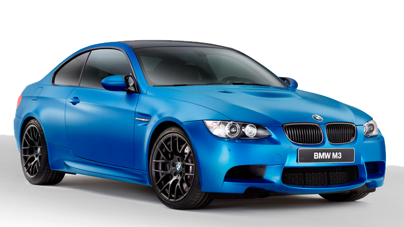

BMW M3
Der BMW M3 ist ein Sportmodell der 3er-Reihe von BMW, das seit Anfang 1986 hergestellt wird. Dabei handelt es sich um ein Fahrzeug, welches von der BMW-Tochterfirma BMW M GmbH entwickelt und anfangs (E30 und E36) auch produziert wurde. Die späteren Baureihen (E46 und E90) entstanden auf den Bändern der BMW AG. Der BMW M3 ist eine besonders leistungsstarke Variante des jeweiligen 3er-Serienfahrzeugs. Der BMW M3 (E30) war bei seiner Markteinführung im Frühjahr 1986 nur als zweitürige Limousine lieferbar. Ab Mitte 1988 wurde der M3 auch als Cabrio angeboten.
Der M3 der vierten Generation war in drei Karosserievarianten erhältlich. Im Herbst 2007 erschien zunächst das Coupé (E92), während im Frühjahr 2008 das Cabriolet (E93) sowie die Limousine (E90) folgten. Einige Details des Vorgängers, wie die Erhebung auf der Motorhaube, die breiteren Radkästen, die vierflutige Auspuffanlage und die Lufteinlässe auf den Kotflügeln, wurden übernommen. Die Außenspiegel ähneln denen des M3 der Baureihe E3
Bei der Entwicklung versuchte BMW das Gewicht zu verringern. Dafür wurde das Seriendach des Coupés aus kohlenstofffaserverstärktem Kunststoff entwickelt, die Stoßstangenträger aus mit endlosen Glasfasern verstärktem Thermoplast (sog. Organoblech aus Polyamid 6 und Glas) gefertigt und eine Aluminiummotorhaube verwendet. Das Leergewicht liegt bei 1655 kg (Coupé) und damit trotzdem fast 100 kg über dem des Vorgängers. Alle drei Varianten haben den S65-V8-Hochdrehzahl-Motor. Ab Mai 2008 gab es den BMW M3 mit dem von GETRAG entwickelten Doppelkupplungsgetriebe (Marketingbezeichnung: „M-DKG“). Dieses hat sieben Gänge, ist per Schaltwippen am Lenkrad bedienbar und bietet einen Automatikmodus.